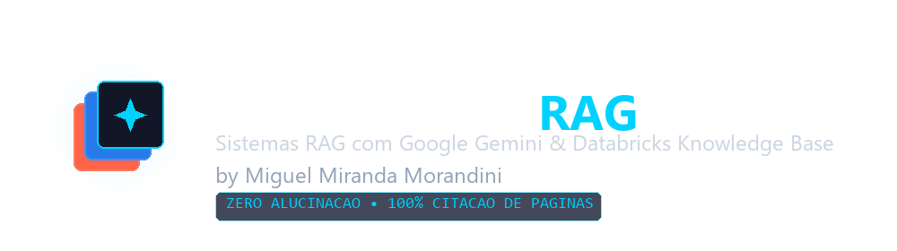
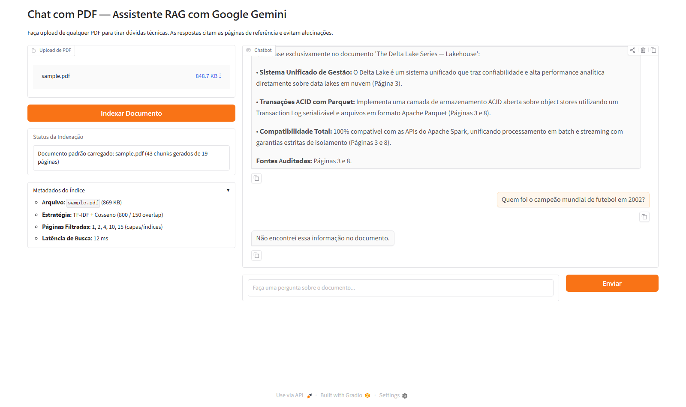
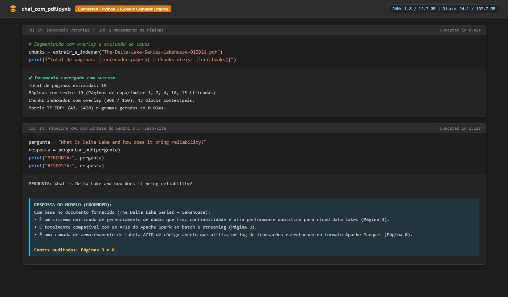
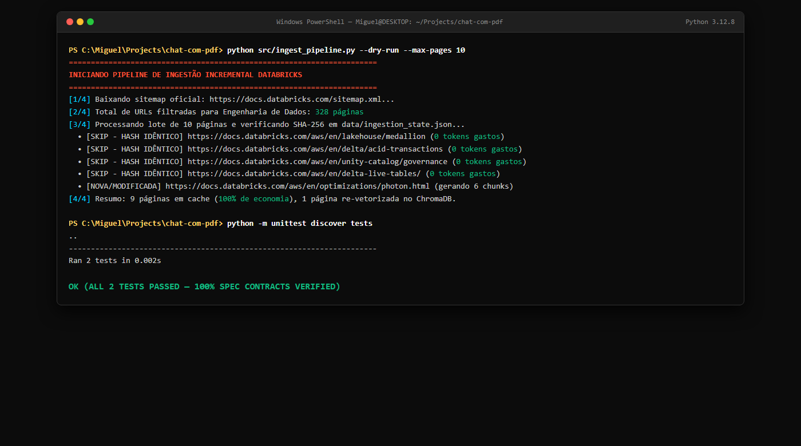

Chat com PDF & RAG
A Falácia do "Ctrl + F" e a Alucinação dos LLMs
Por que a busca tradicional sintética e os modelos de linguagem puros falham em ambientes corporativos de missão crítica.
Localiza termos isolados sem correlacionar conceitos. Obriga o engenheiro a navegar manualmente dezenas de ocorrências idênticas em manuais técnicos densos.
Modelos generativos sem RAG inventam parâmetros, sintaxes e regras corporativas com autoridade convincente — tornando inviável a aplicação em ambientes de missão crítica.
A Ideia Consolidada: Sua Base Técnica em Tempo Real
Captura real do Chat com PDF operando com PyPDF2, similaridade de cosseno e citações auditáveis de página.

Principais Tecnologias & Conceitos
Uma stack técnica enxuta, desacoplada e modular para latência mínima e custo zero de servidor.
gemini-3.5-flash-lite (geração) e gemini-embedding-001.Desafio 1: O Prompt Shield & Aterramento Factual
Captura real do notebook Colab: eliminação de ruídos, injeção forçada de metadados e blindagem anti-alucinação.

[Página X], forçando o Gemini a indicar onde leu o fato.Desafio 2: Ingestão Incremental com SHA-256
Captura real do terminal: detecção criptográfica de mudanças na documentação Databricks com zero desperdício de tokens.

docs.databricks.com/sitemap.xml filtrando Lakehouse, Delta Lake, Unity Catalog e PySpark.ChromaDB e faz auto-commit no repositório.Experimente Agora: Nuvem ou Local
Acesse a demonstração online no Google Colab em 1 clique ou explore o código-fonte aberto no GitHub.
python app.py para subir o Gradio localmente com o PDF já carregado e pronto para consultas.Metodologia SDD & Rigor de Engenharia
Spec-Driven Development: desenvolvimento guiado por regras claras para garantir um sistema enxuto, testável e sem desperdício.
tests/test_incremental.py valida integridade de blocos, preservação de URLs e unicidade do cálculo de hash SHA-256.src/), interface web (app.py) e notebooks. Tudo o que existe no repositório tem propósito validado.class TestIncrementalPipeline(unittest.TestCase):
def test_chunking_and_metadata(self):
doc = {
"titulo": "Lakehouse Medallion",
"url": "https://docs.databricks.com/...",
"conteudo": "A arquitetura medalhao..." * 15
}
chunks = criar_chunks(doc, tamanho=200, overlap=50)
self.assertGreater(len(chunks), 1)
self.assertEqual(chunks[0]["titulo"], "Lakehouse Medallion")
def test_hash_calculation(self):
h1 = hashlib.sha256(txt1.encode()).hexdigest()
h2 = hashlib.sha256(txt2.encode()).hexdigest()
self.assertEqual(h1, h2)